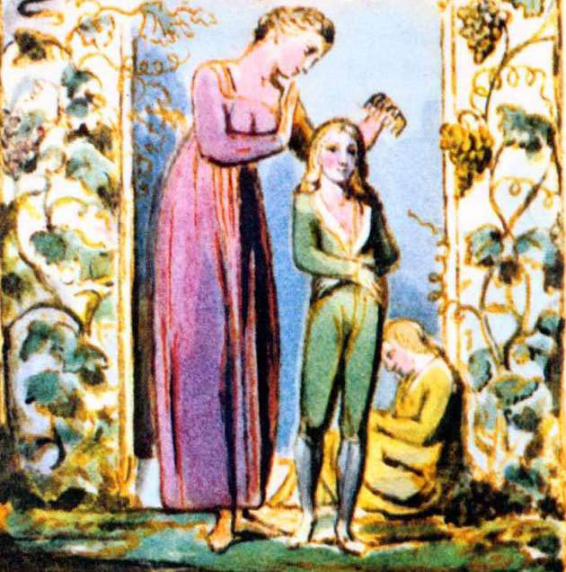

Çimenlikte çocuk sesleri duyulduğunda
Ve fısıltılar küçük vadilerde,
Gençlik günlerim canlanır gözümde,
Yüzüm sararır solar.
Artık eve gelin çocuklarım, güneş batıyor
Ve beliriyor gecenin çiyleri,
Baharınız gününüz oyunda heder oldu
Ve kışınız geceniz bekliyor pusuda.
